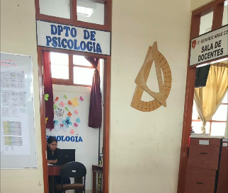
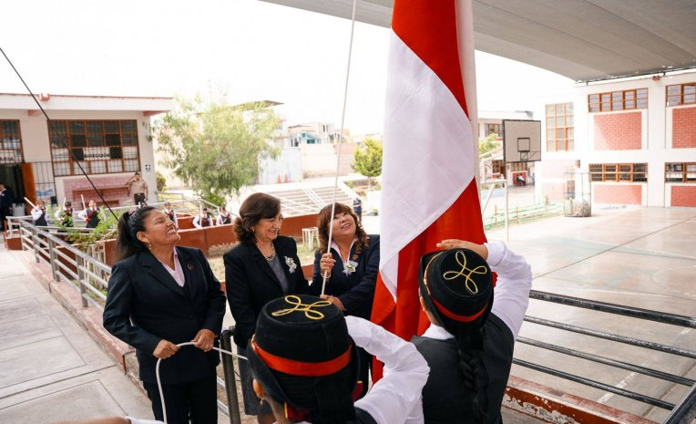

Soporte Emocional
Servicios y Bienestar Estudiantil
Acompañamiento psicológico, tutoría y orientación permanente para el bienestar de nuestros estudiantes y familias.
Áreas de Apoyo y Orientación
Cuidando la salud mental, la convivencia armónica y el desarrollo personal
Departamento Psicopedagógico
Psicología y TOE (Tutoría y Orientación Educativa)
En la I.E. Gerardo Arias Copaja brindamos soporte emocional, prevención de riesgos psicosociales y orientación vocacional. El equipo de Tutoría trabaja de la mano con los docentes tutores de cada sección para garantizar un clima escolar seguro y empático.
- Evaluación y seguimiento psicopedagógico individual y grupal.
- Escuela para padres y talleres de orientación familiar.
- Talleres de habilidades sociales y resolución pacífica de conflictos.

Profesionales a Cargo
Especialistas dedicados al bienestar de la comunidad copajina
Leydi Calane Laura
Psicóloga EducativaEspecialista en intervención clínica infantil, adolescente y orientación a familias.

Dra. María Flores Sánchez
Coordinador de TOEEncargado de la convivencia escolar democrática y coordinación de tutoría por niveles.